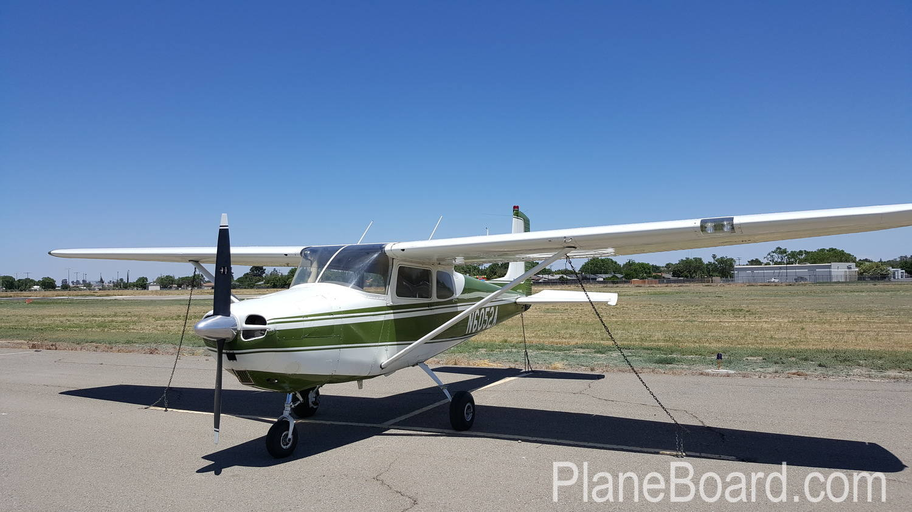
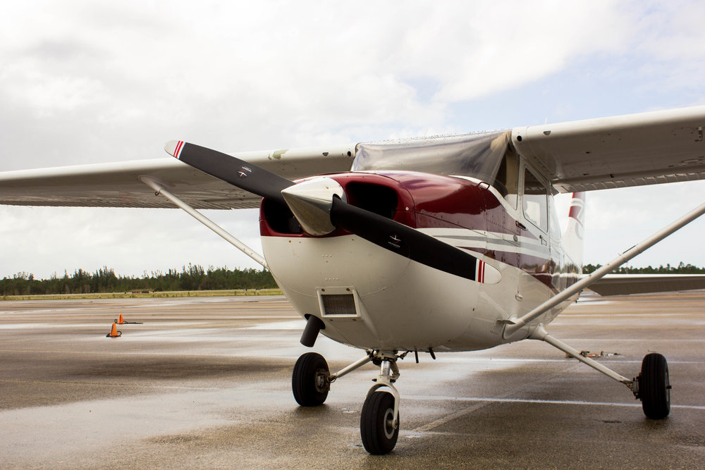

Inspection
First and most importantly the pilot must inspection his/her plane for any damage and check for functionality of all parts.

Cockpit Interior
- Aircraft Docs (ARROW) - Current
- Squawk Sheet - None Open
- Hobbs Meter - Note Hours
- Fuel Tank Selector - Both
- Control Yoke Lock - Remove
- Ignition Switch - Off
- Avionics Switch - Off
- Master Switch - On
- Fuel Gauges (BOTH) - Works
- Beacon - Works
- Land/Tax Light (Night) - Chk/On/Off
- Nav. Lights (Nights) - Chk/On/Off
- Cabin Light - Work
- Instrument Lights (Nights) - Works
- Flaps/Flaps Gauge - Lower/Works
- Master Switch - Off
Fuel Check
- Fuel Level - Chk Tanks w/Ladder
- Fuel Cap - Installed/Secured
- Wing Edge & Top - No Ice/Damage
Fuselage & Empennage
- Dents/Damage - None
- Antennas - Secure
- Tail Tie-Down - Remove/Clear
- Elevator - Free Movement/Secure
- Rudder - Free Movement/Secure
- Trim Tab - Secure
- Strobe & Nav Lights - No Damage/Secure
Right Wing
- Wing Tie-Down - Remove/Clear
- Flap (Check Hardware) - Secure
- Aileron - Free Movement/Secure
- Leading Edge Cabin Vent - Clear/No Obstructions
- Wheel/Gear - Secure/No Damage
- Tire Condition - No Damage/Not Flat
- Fuel Tank Stump - Blue/Odor/No Water
Nose
- Engine Oil Level - 6 to 8 Quarts
- Fuel Strainer - Drain 4 Seconds
- Nose Gear/Tire Condition - No Damage/Not Flat
- Nose Strut - No Leaks/Chrom Check
- Air Filter - Clear
- Prop & Spinner - No Damage
- Cowl Plugs - Remove
- Alternator Belt - Tight/No Damage
- Static Port - Clear/ No Obstructions
- Engine Compartment - No Damage
- Cowl/Access Hatch - Secured
- Windshield - Clean/No Damage
Left Wing
- Wing Tie-Down - Remove/Clear
- Flap (Check Hardware) - Secure
- Aileron - Free Movement/Secure
- Leading Edge Cabin Vent - Clear/No Obstructions
- Wheel/Gear - Secure/No Damage
- Tire Condition - No Damage/Not Flat
- Fuel Tank Stump - Blue/Odor/No Water
